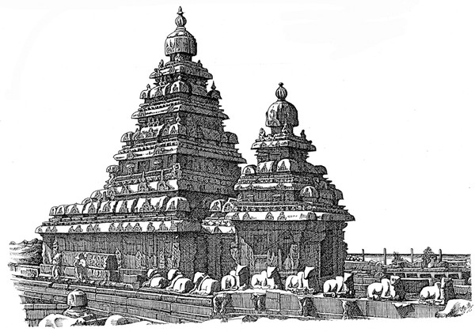

Home
Tamilnadu is located in the southern part of India. There are numerous interesting facts that make this state historically important. The language of this state, tamil is believed to be more than 2000 years old and one of the longest existing languages in the world. The Dravidian civilization is well renowned for their richness in culture.
Tamilnadu is also known for its ancient monuments and historic temples with outstanding architectural style. The stone carvings and architectures and paintings in those temples were done with such precision and beauty, so that it makes the people wonder that how the ancient people managed to do that in those olden days without using any advanced tools.
As we speak about those kinds of ancient architectures, Mahabalipuram also called as city of Mamalla is one of the perfect embodiments. Located in the coramandal coast it stands majestically and gives an awe sensation to whoever visits that town. For So naturally it attracts tourists from lot of distant countries, particularly the tourists who are fascinated about historically significant monuments. Please feel comfortable to explore this website.